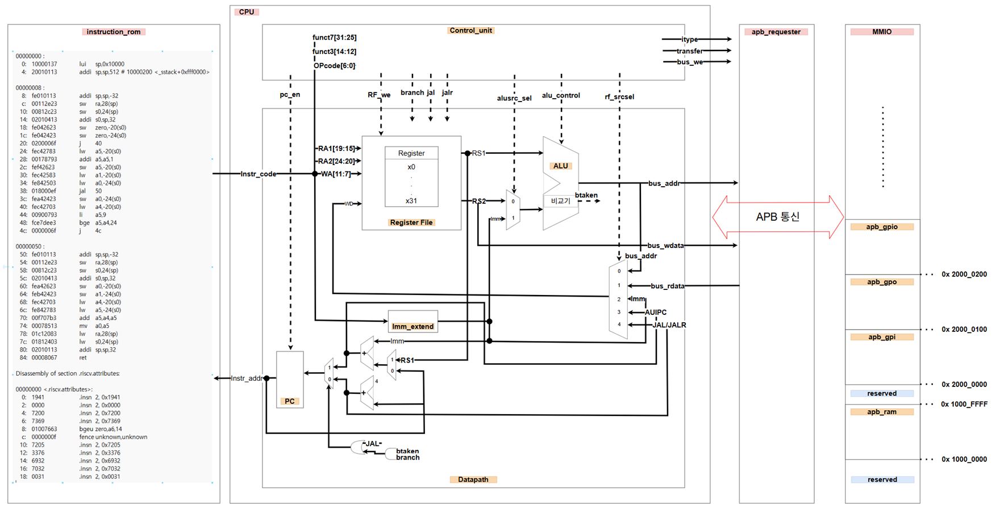

특징
관심 분야

타이밍도로 본 이력
회사 경력, 교육과정, 실습 주제를 파형 뷰어처럼 한 시간축에 놓았습니다. 한 주기가 한 달이고, 노란 커서가 지금입니다.
- 시점
- 2026년 11월
- 경력
- 2023.11 ~ 2026.06 유호전기공업 연구소, FPGA 로직 설계와 검증
- 교육
- 2026.06 ~ 2027.02 AI 시스템반도체 설계 교육과정
- HDL
- 2026.11 ~ 2026.11 MicroBlaze, AXI
- 임베디드
- 2026.10 ~ 2026.11 STM32, FreeRTOS
경력
| 한 일 | 내용 |
|---|
설계와 검증 프로젝트
보드 위에서 돌린 프로젝트
STM32 NUCLEO-F411RE로 만든 임베디드 프로젝트입니다. 사진은 모두 직접 찍은 실물입니다.
실습 기록
프로젝트로 이어진 단계별 실습입니다. 각 저장소 폴더의 README에 동작과 구현 내용을 정리했습니다.